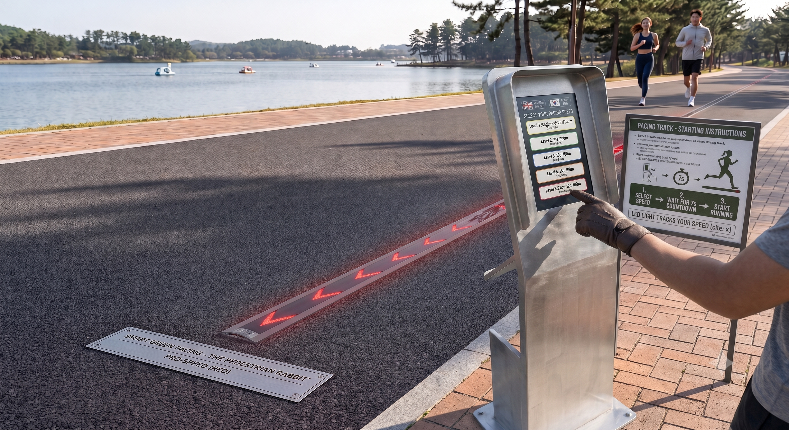
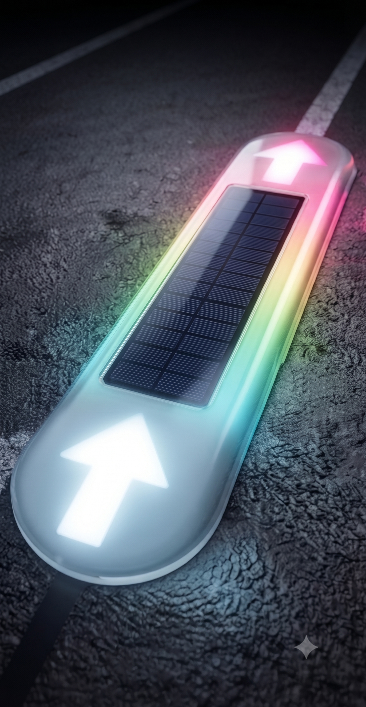
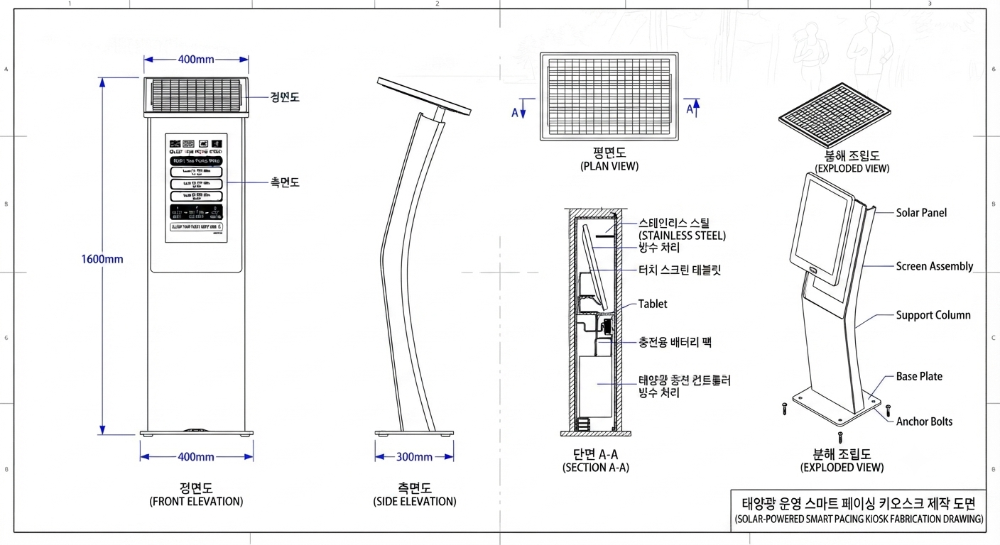

스마트 러닝 가이드 시스템 사업 제안서
1. 프로젝트 개요 및 배경
본 프로젝트는 단순 운동 시설을 고도화된 IoT 스마트 인프라로 전환하여, 도시 공원의 가치를 제고하는 핵심 사업입니다. 단순히 LED 조명을 설치하는 것이 아니라, 시민의 건강 증진과 더불어 지역의 랜드마크로서 기능하도록 기획되었습니다.
- 지자체 홍보 거점: 스마트 시티 모델 사업으로서의 가치를 높여 전국 단위 러닝 성지로서의 브랜딩 추진.
- 지역 사회 핵심 이슈 사업: 시민 참여형 건강 프로그램을 활성화하여 지역 커뮤니티의 결속력 강화.
2. 제품 및 서비스 개요
국내 러닝 인프라의 표준이 될 최첨단 러닝 가이드 시스템입니다. 1m 간격으로 매립된 모듈과 50cm 간격의 LED 연동을 통해 러너에게 실시간 페이스메이커를 제공합니다. 사용자는 키오스크 혹은 본인의 스마트폰(QR 스캔)으로 즉시 러닝을 시작할 수 있습니다.




3. 핵심 시스템 구성 및 운영
| 구분 | 단계 | 주요 내용 |
|---|---|---|
| 사용자 인증 | 1단계 | 키오스크 또는 스마트폰 QR 스캔을 통한 사용자 식별 및 레벨 선택 |
| 페이스 안내 | 2단계 | 7단계 페이스 설정, 실시간 컬러 LED 라이트 가이드 |
| 통합 관리 | 3단계 | 4,000개 모듈의 중앙 통합 관제 및 데이터 분석 |
4. 시스템 작동 원리 (빛을 제어하는 방식)
시스템이 트랙 위에서 페이스를 가이드하는 기본적인 작동 메커니즘은 다음과 같습니다.
- 사용자 입력 및 데이터 전송:
코스별 전문가의 주행 데이터를 계산해 초보부터 프로까지의 주행 데이터를 입력하여 총 7단계의 레벨로 구성합니다. - 개별 주소 지정형 제어 (Addressable LED Control):
이 시스템에 사용되는 LED 스트립은 각 LED 소자마다 고유의 '주소(ID)'를 가지고 있습니다. 메인 컨트롤러는 전체 스트립에 동일한 신호를 보내는 것이 아니라, "몇 번째 LED만 켜져라"라는 정밀한 데이터를 초당 수십~수백 번 전송합니다. - 시각적 착시를 이용한 이동 구현 (Apparent Motion):
빛이 실제로 움직이는 것이 아니라, 1번 LED가 꺼지는 동시에 2번 LED가 켜지고, 이어서 3번 LED가 켜지는 과정을 아주 빠른 속도로 반복합니다. 이를 통해 사람의 눈에는 하나의 빛 덩어리(또는 토끼 모양의 불빛)가 트랙을 따라 매끄럽게 달리는 것처럼 보이게 됩니다. - 실시간 페이스 계산 알고리즘:
컨트롤러는 설정된 페이스를 유지하기 위해, LED 소자 사이의 물리적 거리(예: 각 LED 간격 2cm)를 기반으로 다음 LED가 켜져야 할 타이밍을 실시간으로 자동 계산합니다.* 계산 예시: 초속 6.66m로 이동하려면, 2cm 간격의 LED를 약 0.003초(3밀리초)마다 한 칸씩 옆으로 켜주어야 합니다.
5. 기술적 난제 해결 및 고도화 전략
| 기술 항목 | 해결 전략 및 상세 사양 |
|---|---|
| 방수 및 내구성 | IP68 등급 보장, 특수 투명 우레탄 진공 몰딩(충격/침수 방지) |
| 통신 안정성 | LoRa/NB-IoT 기반 저전력 원거리 통신, 대규모 모듈 정밀 제어 |
| 페이스 동기화 | NTP(Network Time Protocol) 기반 중앙-모듈 간 초정밀 시간 동기화 |
| 에너지 관리 | 태양광 자가 발전과 스마트 BMS를 결합한 전력 효율 로직 |
| 인증/유지보수 | KC 전파 인증 사전 획득, 현장 교체형 모듈화 설계 |
6. 시제품 제작 실비 견적 항목 (단위: 원)
| 구분 | 항목 | 상세 내용 | 예상 실비 (단위) |
|---|---|---|---|
| H/W 개발 | LED 모듈 PCB | 1m 매립형 바닥 조명 전용 기판 설계 및 제작 | 500,000 ~ 1,000,000 |
| 기구 프레임 | 알루미늄 합금 케이스 CNC 가공 (시제품용) | 1,000,000 ~ 2,000,000 | |
| 투명 우레탄 몰딩 | 진공 몰딩용 금형 및 우레탄 액상 재료비 | 500,000 ~ 1,000,000 | |
| 핵심 부품 | 태양광 패널, 고휘도 LED, 배터리, 컨트롤러 등 | 1,500,000 ~ 3,000,000 | |
| S/W 개발 | 펌웨어/제어 | 중앙 컨트롤러 제어 로직 및 모듈 통신 S/W | 3,000,000 ~ 5,000,000 |
| 앱/키오스크 연동 | QR 스캔 페이지 및 사용자 인터페이스(UI) 개발 | 3,000,000 ~ 5,000,000 | |
| 기타 | 테스트 베드 | 실제 러닝 트랙 설치 및 테스트 환경 구축비 | 1,000,000 ~ 2,000,000 |
| 합계 | 예상 실비 | 시제품 1세트(수량 10개 기준) 제작 예산 | 약 1,000만 ~ 2,000만 원 |
7. 스마트 러닝 가이드 시스템 시제품 제작 로드맵
| 단계 | 주요 업무 | 기간 | 핵심 마일스톤 |
|---|---|---|---|
| 1단계 | 기획 및 시스템 설계 | 1~2주 | 시스템 사양 확정 및 상세 설계(도면 완료) |
| 2단계 | H/W 부품 발주 및 가공 | 3~8주 | PCB, 알루미늄 케이스 가공 및 조립 완료 |
| 3단계 | S/W 개발 및 연동 | 3~12주 | 앱/키오스크 UI, 서버 통신 로직, 펌웨어 개발 |
| 4단계 | 통합 테스트 및 시운전 | 13~16주 | 실외 현장 설치, 방수/통신 테스트, 최종 안정화 |
8. 주차별 상세 추진 일정
- 1개월 차: 기획 및 설계 (1~4주)
- 1~2주: 시스템 요구사항 정의(SRS), 부품 명세서(BOM) 작성, 업체 선정.
- 3~4주: 모듈 3D 기구 설계 및 회로도 작성, 키오스크 UI/UX 레이아웃 설계.
- 2개월 차: H/W 가공 및 S/W 착수 (5~8주)
- 5~6주: PCB 기판 제작 및 핵심 부품(태양광, 배터리, LED) 발주.
- 7~8주: 알루미늄 합금 케이스 CNC 가공 및 외주 업체 조립, S/W 개발 환경 구축 및 기초 로직 구현.
- 3개월 차: 통합 개발 (9~12주)
- 9~10주: LED 모듈 펌웨어 코딩, 중앙 컨트롤러 통신 연동 테스트(LoRa/NB-IoT), QR 코드 연동 서버 개발.
- 11~12주: 키오스크/스마트폰 통합 인터페이스 개발, 방수/진공 몰딩 처리 공정 적용.
- 4개월 차: 현장 검증 및 보완 (13~16주)
- 13~14주: 현장 실물 설치, 방수 테스트(IP68 검증), 통신망 환경 테스트.
- 15주: 페이스 싱크 정밀도 측정 및 안정화(NTP 동기화 최적화), 오류 보완.
- 16주: 최종 시제품 성능 평가 및 제안 사업 보고서 마무리.
9. 개발 성공을 위한 전략적 제언
- 병행 개발(Concurrent Engineering): 하드웨어 제작과 소프트웨어 개발을 별도 팀으로 운영하여 병행 수행하면 기간을 최대 2주 정도 단축할 수 있습니다.
- 테스트 베드 조기 확보: 14주 차 현장 테스트를 위해 3개월 차 말부터 지자체나 공원 관리 측과 사전 협의하여 테스트 코스를 확보해야 합니다.
- 위험 관리(Risk Management): 통신 지연이나 방수 이슈는 시제품 제작 초기(2개월 차)에 샘플 모듈을 만들어 미리 검증하는 것이 전체 일정을 지키는 핵심입니다.
10. 제안사 소개 및 주요 실적
(주)디앤테크는 30년 이상의 보안 및 제어 시스템 구축 노하우를 가진 IoT 전문 기업입니다. 현실 공간을 제어하는 고도화된 솔루션을 제공합니다. (www.iokey.io)

- 금강산 관광지역 전체 페이먼트 시스템
- 국내 최초 공공자전거(청원누비자) 무인 대여 시스템
- 평창 휘닉스 스키장 자동 검표 및 용평리조트 자율주행 모노레일
- QR코드 기반 OPT 인증 및 테이블오더 시스템
- 이 외에도 30년간 축적된 기술력을 바탕으로 다수의 스마트 제어 및 공공/민간 IoT 인프라 구축 프로젝트를 성공적으로 수행해 오고 있습니다.
11. 기대 효과 및 비전
본 사업은 단순한 조명 설치를 넘어 스마트 시티 인프라의 미래상을 제시합니다. 전국 러너들이 방문하는 '러닝 성지' 조성을 통해 지역 관광 활성화 및 시민 삶의 질 향상을 도모합니다.
🎯 스마트 페이싱 키오스크 UI 데모 체험
아래 데모 화면 이미지를 클릭하시거나 버튼을 누르시면, 실제 러닝 트랙 입구에 설치될 키오스크의 사용자 인터페이스(UI) 데모를 웹에서 직접 체험해 보실 수 있습니다.
.png)
👉 키오스크 데모 실행하기 (클릭)